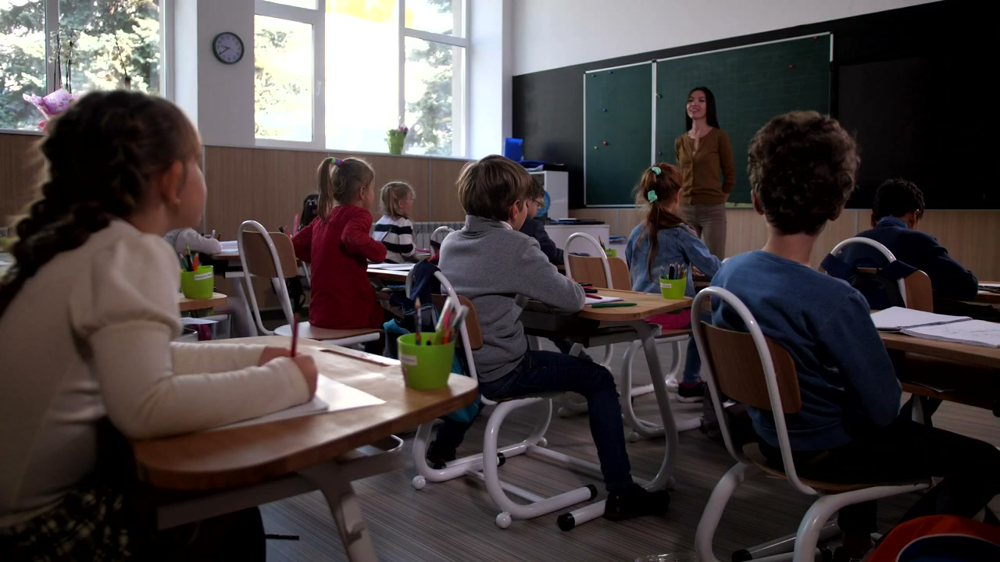
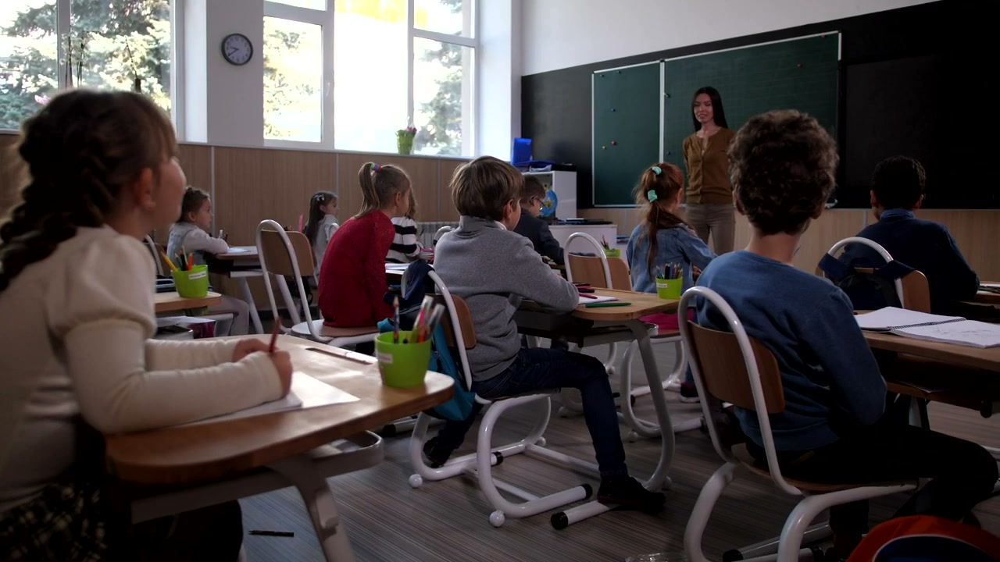
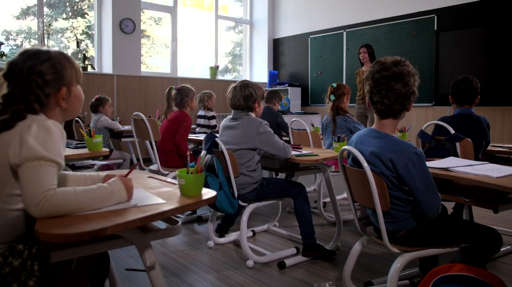
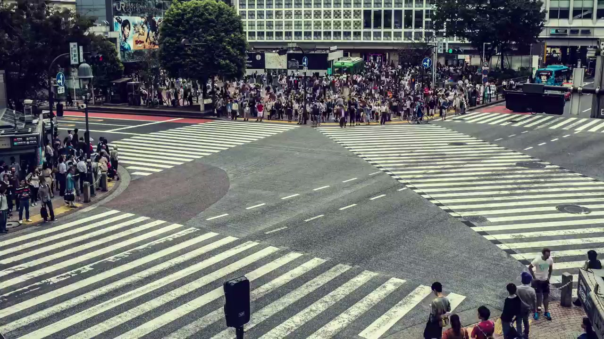
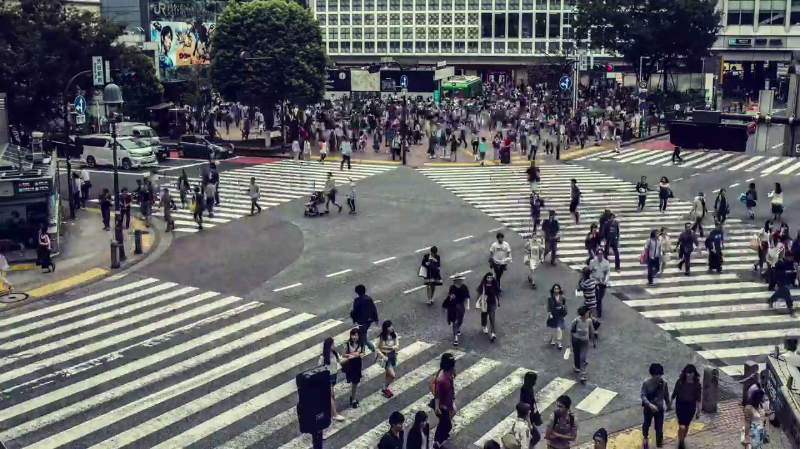

工厂安全生产解决方案
适用：制造工厂、化工园区、建筑工地、矿山作业
工厂安全 AI 实时检测
 AI
AI
 AI
AI
 AI
AI
AIAIAI产品亮点
PPE 全套智能合规检测安全帽、反光衣、防护服、安全带、护目镜、手套、口罩——7 类装备同时检测，不漏检、不误判
高危作业实时监管动火、高处、受限空间、吊装四大高危作业全程 AI 盯防，违规即告警
人车协同安全叉车接近人员自动预警，人车混行区域风险实时识别，盲区风险提前介入
安全事件全闭环从发现违规到生成报告、关联培训记录、推送整改，全流程自动化
检测能力清单
| 类别 | 检测项 |
|---|---|
| PPE 合规 | 安全帽、反光衣、防护服、安全带、护目镜、手套、口罩（7 类同步检测） |
| 危险区域 | 电子围栏越线、禁入闯入、接近危险设备、违规操作 |
| 高危作业 | 动火、高处、受限空间、吊装（开箱即用模板） |
| 人车协同 | 叉车接近预警、人车混行、车辆超速、盲区风险 |
智能体工作流示例
工业质检解决方案
适用：制造业产线、食品加工、电子产品组装、包装检测
工业质检 AI 检测
 AI
AI
 AI
AI
 AI
AI
 AI
AI
AIAIAIAI产品亮点
全品类外观缺陷检测划痕、凹陷、色差、污渍、变形、缺件——6 大类缺陷同步识别，漏检率 < 0.1%
装配完整性校验零件缺漏、错装、反装、螺丝缺失——基于视觉的装配质量实时验证
OCR 识别与条码校验标签文字、序列号、条码、二维码——自动读取并校验，零人工录入
实时质量数据闭环缺陷数据自动统计、趋势分析、根因追溯，驱动持续改进
检测能力清单
| 类别 | 检测项 |
|---|---|
| 外观检测 | 划痕、凹陷、色差、污渍、变形、缺件 |
| 装配检测 | 零件缺漏、错装、反装、螺丝缺失、间隙异常 |
| 包装检测 | 标签偏移、封口异常、填充不足、外箱破损 |
| OCR 识别 | 标签文字、序列号、条码、二维码自动读取校验 |
| 尺寸/位置 | 关键尺寸测量、位置偏差、角度校验 |
智能体工作流示例
设备运维解决方案
适用：工厂设备管理、数据中心运维、能源行业、化工设备
设备运维能力展示

视觉异常冒烟、明火、漏液
IoT 联动温度、振动、压力
预测维护趋势与工单闭环
产品亮点
视频 + IoT 多模态融合摄像头看到漏液，同时调取温度和振动传感器数据，交叉验证后再判断——误报率降低 80%+
预测性维护根据多维度异常趋势提前生成维护工单，减少非计划停机
自动巡检摄像头/巡检机器人按预设路线自动巡检，视觉确认设备状态，自动生成点检记录
闭环验证工单派发 → 维修执行 → 修复后重新视觉检测确认——确保问题真正解决
检测能力清单
| 类别 | 检测项 |
|---|---|
| 视觉异常 | 冒烟、明火、漏液、异常灯光、异物附着、防护罩缺失 |
| IoT 联动 | 温度异常、振动异常、压力异常、电流/电压异常、气体泄漏 |
| 运维场景 | 自动巡检、设备状态识别、环境监测、点检表数字化 |
智能体工作流示例
仓储物流解决方案
适用：仓库管理、物流分拨中心、制造仓储、冷链仓储
仓储物流 AI 检测
 AI
AI
 AI
AI
 AI
AI
AIAI产品亮点
视频 + WMS 双系统联动摄像头发现货物位置异常，自动查询仓储管理系统核对正确库位，判断是否错放
叉车安全全维度管控超速、违规载人、进入禁区、接近人员、货物超高/倾斜，一键开启全部叉车安全规则
货架与通道实时监控货架倾斜/超载预警、通道堵塞/消防通道占用自动发现，避免安全隐患积累
异常处理全闭环发现异常 → 创建事件 → 通知管理员 → 生成工单 → 跟踪整改
检测能力清单
| 类别 | 检测项 |
|---|---|
| 仓库安全 | 人员闯入、货物倒塌/堆放异常、货架倾斜/超载、通道堵塞 |
| 叉车安全 | 超速、违规载人、进入禁区、接近人员、人车混行、货物超高 |
| 系统联动 | WMS 库位核对、异常事件创建、工单生成与跟踪 |
智能体工作流示例
宠物健康智能体解决方案
适用：家庭宠物看护、宠物店/宠物医院、养殖场
宠物健康 AI 监测
 AI
AI
AIAI
AI
产品亮点
从"看宠物"升级为"懂宠物"建立个体行为基线，发现活动量、饮食、行为的异常偏离
多维度关联健康分析活动量下降 + 进食减少 + 频繁抓挠 → AI 判断健康异常风险 → 通知主人
健康周报自动生成每周自动生成宠物行为与健康趋势报告，让主人一目了然
异常实时推送打架、持续吠叫、异常奔跑、长时间静止等紧急事件秒级推送
监测能力清单
| 类别 | 监测项 |
|---|---|
| 行为监测 | 狂躁、打架、撕咬、异常攻击、持续吠叫、异常奔跑、长时间静止 |
| 饮食饮水 | 进食次数/量变化、长时间不进食、饮水量变化、异常暴饮 |
| 身体状态 | 掉毛/局部脱毛、皮肤异常、抓挠频繁、步态异常、呕吐、排泄异常 |
智能体工作流示例
植物生长智能体解决方案
适用：现代农业大棚、园艺种植、家庭花园、植物工厂
植物生长 AI 监测
 AI
AI
 AI
AI
 AI
AI
AIAIAI产品亮点
视频 + 环境传感器闭环摄像头看到叶片萎蔫，自动读取土壤湿度、光照数据，AI 综合判断后自动启动灌溉
病虫害早期预警叶斑病、白粉病、真菌感染、虫害——在肉眼还难以察觉时提前发现
农事建议智能化不只是发现问题，更给出具体建议：是否需要浇水、施肥、修剪
自动执行 + 闭环验证联动灌溉/施肥设备自动执行，执行后视觉复检确认效果，持续优化策略
监测能力清单
| 类别 | 监测项 |
|---|---|
| 环境监测 | 光照不足/过强、温度异常、湿度异常、土壤湿度不足、CO₂ 异常 |
| 营养监测 | 缺氮/磷/钾/铁、营养不良 |
| 生长状态 | 生长缓慢、徒长、叶片异常、黄叶/枯叶/萎蔫、枝叶过密 |
| 病虫害 | 虫害、真菌感染、叶斑病、白粉病、根部异常 |
智能体工作流示例
老人照护智能体解决方案
适用：居家养老、养老院/护理机构、社区养老、独居老人看护
老人照护 AI 监测
 AI
AI
 AI
AI
 AI
AI
AIAIAI产品亮点
基于行为基线的主动判断系统学习老人日常行为规律，当行为偏离历史模式时主动预警
日常生活无感监测是否吃饭、喝水、服药、起床、睡觉——无需佩戴设备，摄像头即可感知
跌倒秒级告警跌倒/坠床检测结合姿态分析和停留时间判断，排除正常弯腰，准确率 > 95%
多级联动响应通知家属 → 联动物业/社区 → 必要时联动急救——分险情分级响应
监测能力清单
| 类别 | 监测项 |
|---|---|
| 安全看护 | 跌倒、坠床、长时间静止、危险区域停留、夜间异常活动、走失风险 |
| 健康行为 | 行走异常、步态异常、活动量下降、频繁起夜、异常坐卧 |
| 日常生活 | 是否吃饭/喝水/服药、是否起床/睡觉、是否长时间未出现 |
智能体工作流示例
学校安全解决方案
适用：中小学校园、高校、职业学校、幼儿园
学校安全 AI 监测

AI
AI
AI产品亮点
校园安全全覆盖陌生人闯入、翻墙、打架、拥挤、跌倒——一套系统守护校园每个角落
楼梯拥挤智能疏导实时监测楼梯区域人员密度，超阈值自动触发广播疏导 + 通知值班教师
食堂食品安全看护工作人员口罩/帽子佩戴检测、异物检测、后厨违规行为
校园安全日报/周报自动汇总安全事件，生成校园安全趋势报告，辅助管理决策
检测能力清单
| 类别 | 检测项 |
|---|---|
| 校园安全 | 陌生人进入、翻墙、打架、聚集、跌倒、楼梯拥挤、危险区域进入 |
| 宿舍安全 | 夜间异常活动、烟火、打架、人员聚集、危险物品使用 |
| 食堂安全 | 排队拥堵、食品卫生风险、口罩/帽子检测、异物检测、后厨违规 |
智能体工作流示例
医院安全解决方案
适用：综合医院、专科医院、社区卫生中心、康养机构
医院安全能力展示
患者安全跌倒、坠床、离床
医护合规PPE 与流程监督
环境管理消防、通道、设备
产品亮点
患者安全 7×24 看护跌倒/坠床/离床自动检测，夜间异常活动实时预警，减轻护士巡查压力
医护合规监督PPE 穿戴、无菌操作违规、危险区域进入、操作流程异常——AI 辅助医疗质量管理
智能分级响应识别患者身份与行动能力，区分正常行为（如去卫生间）和异常行为（如走廊徘徊）
未来可深度整合视频 + 电子病历 + IoT + 医院业务系统，构建真正的医疗 AI Agent
检测能力清单
| 类别 | 检测项 |
|---|---|
| 患者安全 | 跌倒、坠床、离床、异常活动、长时间静止、病区异常聚集 |
| 医护合规 | PPE 穿戴、无菌操作违规、危险区域进入、操作流程异常 |
| 医疗环境 | 消防安全、通道堵塞、病区异常、医疗设备异常 |
智能体工作流示例
城市与园区解决方案
适用：产业园区、智慧社区、城市治理、交通管理
城市治理 AI 监测
AI
AI
AI
产品亮点
园区安全一站式管理人员入侵、车辆违停、消防风险、施工安全——统一平台管理园区全域安全
城市事件智能发现道路拥堵、交通事故、车辆逆行、违停、行人闯入、路面积水、垃圾堆积
交通治理数据支撑自动统计各路口违规频次，为交通治理决策提供数据依据
跨系统联动联动交管系统、消防系统、物业系统，实现城市级事件协同处置
检测能力清单
| 类别 | 检测项 |
|---|---|
| 园区管理 | 人员入侵、夜间异常、车辆异常/非法停车、危险区域、消防、人员聚集 |
| 城市治理 | 道路拥堵、交通事故、车辆逆行/违停、行人闯入、路面积水、垃圾堆积 |
智能体工作流示例
家庭安全智能体解决方案
适用：家庭安防、商铺看护、独居老人家庭、有儿童/宠物家庭
家庭安全 AI 监测
 AI
AI
 AI
AI
 AI
AI
AIAIAI产品亮点
从监控设备升级为家庭 AI 管家不再只是"录像存证"，而是 7×24 主动守护家庭安全的智能体
家庭成员多维看护老人跌倒、儿童危险行为、婴儿异常哭闹、宠物行为异常——一个摄像头守护全家
智能场景联动厨房火焰持续且家中无人 → 综合判断灶台忘关火 → 告警 + 联动关闭燃气阀门
环境安全全覆盖防盗、消防、燃气、漏水、异常噪声——家庭安全不留死角
检测能力清单
| 类别 | 检测项 |
|---|---|
| 家庭成员 | 老人跌倒/静止、儿童危险行为、婴儿异常哭闹、宠物行为异常 |
| 家庭安全 | 入侵、门窗异常、烟火、燃气风险、漏水、异常噪声 |
| 智能联动 | 灶台火焰监控、人员位置判断、智能设备联动（关闭阀门/门禁/喷淋） |
智能体工作流示例
人员安全与消防预警解决方案
适用：所有场景的基础能力层，适用于工厂、实验室、学校、医院、园区、家庭等各类场所
人员安全 AI 检测

AI
AIAI
产品亮点
行为理解而非简单检测跌倒检测结合姿态分析排除蹲下/弯腰等正常动作，再结合停留时间判断异常静止
人员异常全覆盖入侵、越界、翻墙、徘徊、聚集、打架、推搡、奔跑、跌倒、呼救、昏迷——18 类行为一站检测
消防预警前置烟雾/明火检测 + 消防通道/疏散通道管理 + 灭火器缺失检查——从被动消防升级为主动防火
风险分级智能响应高风险事件立即告警+联动广播+通知安全员；低风险事件持续跟踪+记录
检测能力清单
| 类别 | 检测项 |
|---|---|
| 人员异常 | 入侵、越界、翻墙、徘徊、聚集、打架、推搡、奔跑、跌倒、呼救、昏迷（18 类） |
| 安全生产 | PPE 穿戴（5 类）、危险区域、违规操作、高危作业、人车混行 |
| 消防安全 | 烟雾、明火、火焰异常、消防通道占用、灭火器缺失、人群聚集逃生风险 |